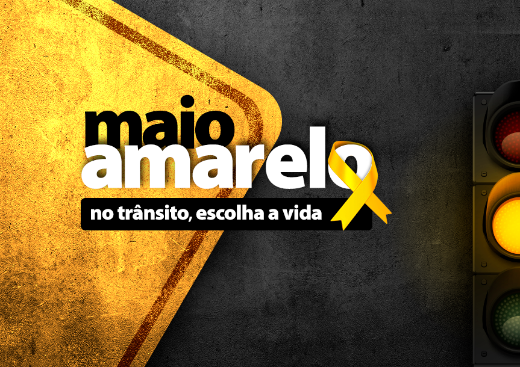

11 de maio de 2011, a ONU decretou a Década de Ação para Segurança no Trânsito.
𝑸𝑼𝑬𝑹𝑬𝑴𝑶𝑺 𝑸𝑼𝑬 𝑬𝑺𝑺𝑨 𝑨𝑪̧𝑨̃𝑶 𝑭𝑨𝑺𝑺𝑨 𝑨𝑺 𝑷𝑬𝑺𝑺𝑶𝑨𝑺 𝑴𝑬𝑳𝑯𝑶𝑹𝑬𝑺 𝑫𝑶 𝑸𝑼𝑬 𝑺𝑨̃𝑶!
É um movimento criado com a finalidade de chamar a atenção da sociedade para o alto índice de mortos e feridos no trânsito de todo o mundo.

𝒄𝒐𝒎𝒐 𝒑𝒐𝒅𝒆𝒎𝒐𝒔 𝒑𝒓𝒆𝒗𝒆𝒏𝒊𝒓
Respeite as leis de trânsito.
Mantenha seu veículo em boas condições.
Mantenha uma distância segura.
Esteja atento ao ambiente ao seu redor.
Evite distrações ao volante.